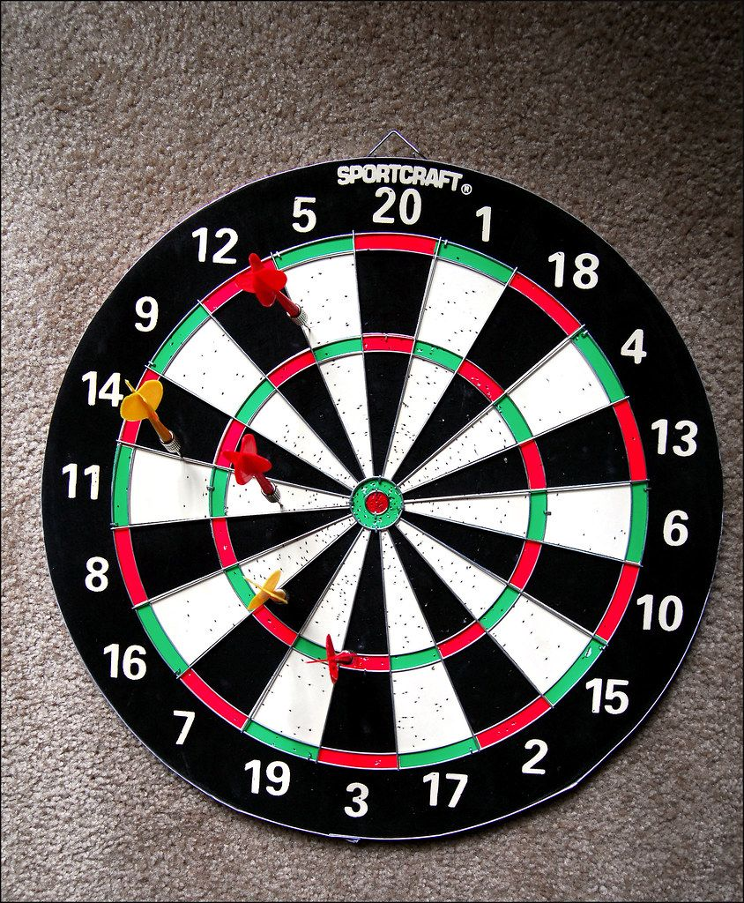
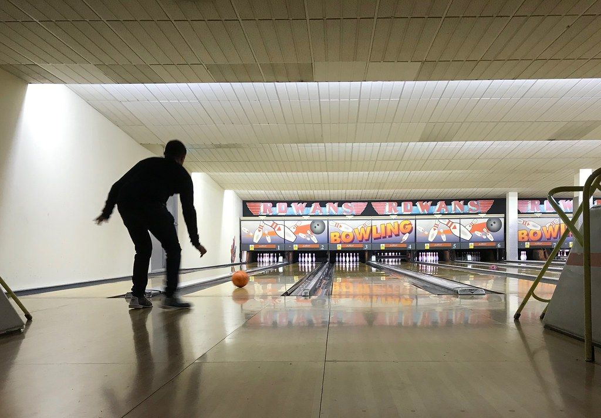
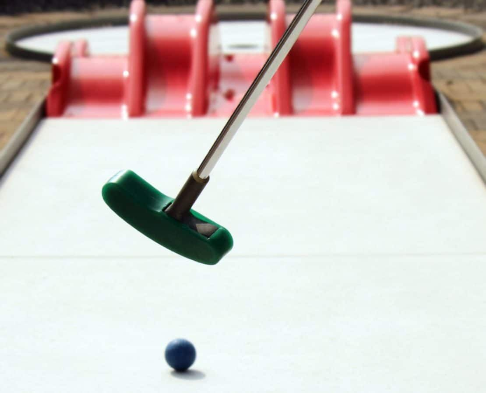
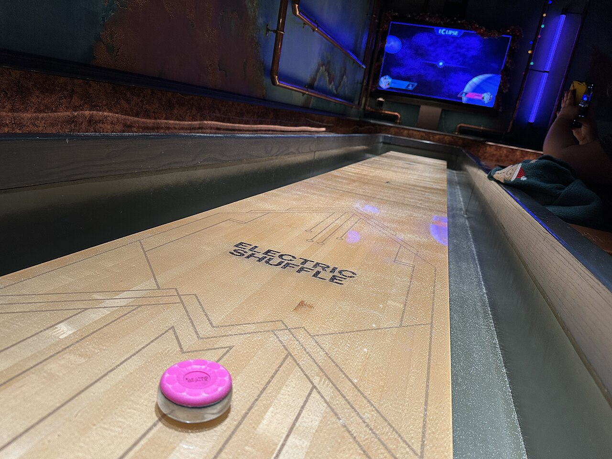
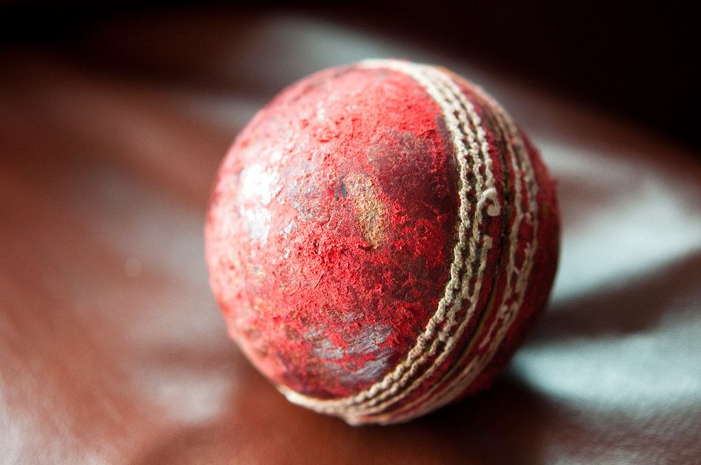
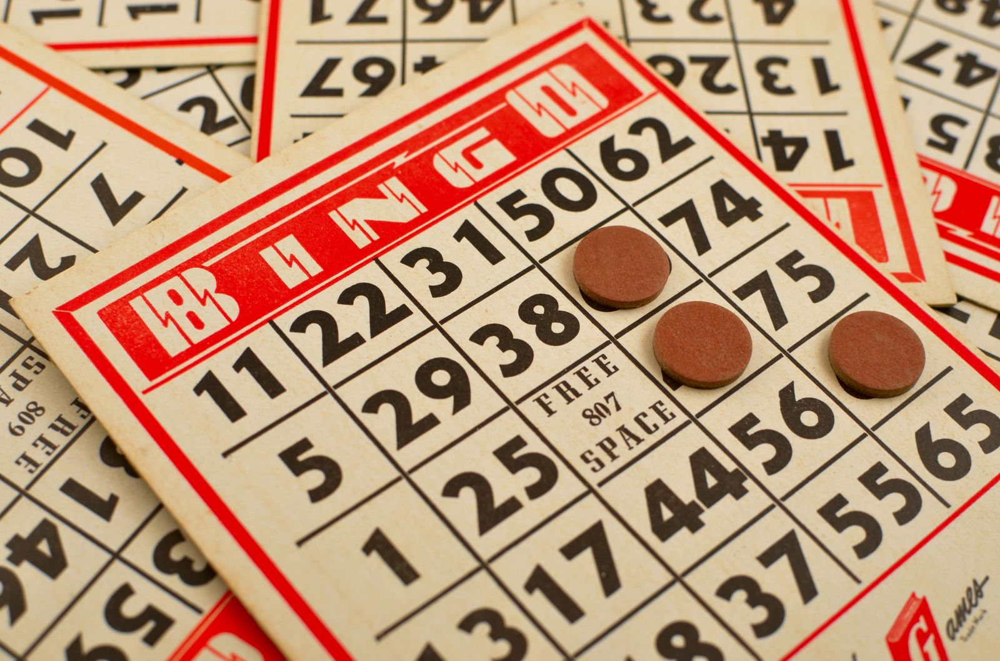

What types of activities can I do in London?
The short answer
London’s competitive socialising venues cover darts, bowling, golf and crazy golf, shuffleboard and boules, clay shooting, sports and ice skating, bingo and karaoke, arcades and board games, immersive experiences and escape rooms, and all-rounders that combine several of these in one building.
What types of activities exist in London?
London has a wide range of places built around playing games together, and the choice goes well beyond the pub quiz. You can throw darts with automatic scoring, kick a football at a giant screen, sing in a private karaoke room or take part in a live bingo show. Most of these venues serve food and drink to your group while you play, and they are designed so that nobody needs any experience. This guide walks through each type of activity, explains how it works and links to the venues on Where To Go London where you can try it.
List of activity types

Darts
Social darts is one of the easiest ways to get a mixed group playing. Each group gets its own lane with a dartboard, cameras track every throw and the scoring is done for you, so nobody needs to do the maths.
Where to play

Bowling
Bowling suits groups who want to chat between turns, and London has everything from retro boutique lanes to large tenpin halls.
Where to play
- All Star Lanes, Brick LaneBoutique bowling with a diner menu
- All Star Lanes, HolbornFour retro lanes and a speakeasy bar
- All Star Lanes, StratfordFourteen lanes and karaoke booths
- All Star Lanes, White CityEight lanes, two bars and a terrace
- Lane7, VictoriaMini golf, shuffleboard and an 18+ arcade hall
- Hollywood Bowl, The O2Thirteen tenpin lanes plus duckpin bowling
- Rowans, Finsbury ParkBowling, karaoke and pool in one building

Golf and crazy golf
Mini golf in London ranges from classic crazy golf to technology-led courses, where each ball carries a chip and screens track your score automatically.
Where to play

Shuffleboard and boules
Shuffleboard means sliding weighted pucks down a long board to score points, and most people pick it up within a few rounds. Boules is the French game of throwing metal balls close to a small target.
Where to play
- Electric Shuffle, London BridgeInstant scoring, players must be 18 or over
- Electric Shuffle, King's CrossGroups of 2 to 32
- Electric Shuffle, Canary WharfTen boards and two bars
- Boulebar, South BankTwenty courts behind the National Theatre
- Boulebar, SpitalfieldsTen indoor courts
- Crazy Boules, Elephant & CastleCrazy-golf-style tracks
Clay shooting
Virtual clay shooting gives you the feel of clay pigeon shooting without any real ammunition. Motion-tracked controllers fire at clays on screens, and live scores appear for the whole group.
Where to play

Sports and ice skating
Several venues turn well-known sports into social games. You can kick real footballs at interactive screens, bat against a ball machine or play ping pong, and the ice rinks add public skating.
Where to play
- Toca Social, The O2Kick real footballs at screen targets
- Toca Social, White CityThe biggest site, with VR
- Sixes Cricket, London BridgeBatting nets with a ball machine
- Sixes Cricket, StratfordTwo nets by the Olympic Park
- Sixes Cricket, WembleyInside Boxpark Wembley
- Bounce, BatterseaPing pong inside Battersea Power Station
- Alexandra Palace Ice RinkYear-round public skating
- Lee Valley Ice CentreTwo Olympic-size rinks
- Streatham Ice and Leisure CentreOlympic-size rink

Bingo and karaoke
Bingo in London has moved a long way from the church hall, and karaoke is usually in private rooms booked for your own group.
Where to play
- Hijingo, ShoreditchTheatrical bingo with live dancers, 18+
- Dabbers Social Bingo, AldgateThemed nights with a shared table
- Lucky Voice, SohoPrivate rooms for 2 to 15
- Lucky Voice, IslingtonNine private rooms
- Lucky Voice, Liverpool StreetRooms for up to 25
- Lucky Voice, HolbornOpen until 3am Thursday to Saturday
- Lucky Voice, WaterlooEight rooms under the station platforms
Arcades and board games
Arcades and board games suit groups who want a slower pace and plenty of time to talk.
Where to play
Immersive experiences and escape rooms
Immersive venues build a whole experience around the game, and escape rooms ask a team to solve puzzles to get out.
Where to play
- The Crystal Maze LIVE Experience, West EndThe 90s game show, live
- Immersive Gamebox, SouthbankPrivate rooms with motion tracking
- SPYSCAPE, Covent GardenInteractive spy museum with challenges
- clueQuest, King's CrossSix spy-themed escape rooms
- Mission: Breakout, Kentish TownInside a disused tube station
- Escape Hunt, Oxford StreetSix rooms, including Doctor Who
All-rounders
All-rounders put several activities in one building, which helps when a group cannot agree.
Where to play
- Boom Battle Bar, Oxford StreetAxe throwing, darts, crazy golf and karaoke
- Boom Battle Bar, Liverpool Street
- Boom Battle Bar, The O2
- Boom Battle Bar, Wandsworth
- Boom Battle Bar, Ealing
- Roxy Ball Room, Old StreetDuckpin bowling, pool, darts and karaoke
- Roxy Ball Room, St Mary Axe
- Roxy Ball Room, Holborn
- Queens Skate Dine Bowl, BayswaterAn ice rink with 17 bowling lanes
- Gravity Max, WandsworthKarting, bowling, VR and batting cages
How to decide on an activity
Start with who is coming. Then match the group to the style of play.
Mixed colleagues
Darts, shuffleboard, virtual clay shootingSomething that scores automatically and needs no skill.Time to talk
Bowling, crazy golf, board gamesGroups that want to chat between turns.Celebrations
Bingo and other show-style venuesBirthdays and hen or stag dos that want something louder.Cannot agree
An all-rounderEveryone picks their own game under one roof.Check the age rules before you book. Several venues are 18+ for every session, and others change their rules in the evening.
Where To Go London compares every venue on the same four things: price, time of day, the group it suits best and the type of activity. Browse our activities page to see every venue grouped by activity, and read how we research venues to see how we check each detail.